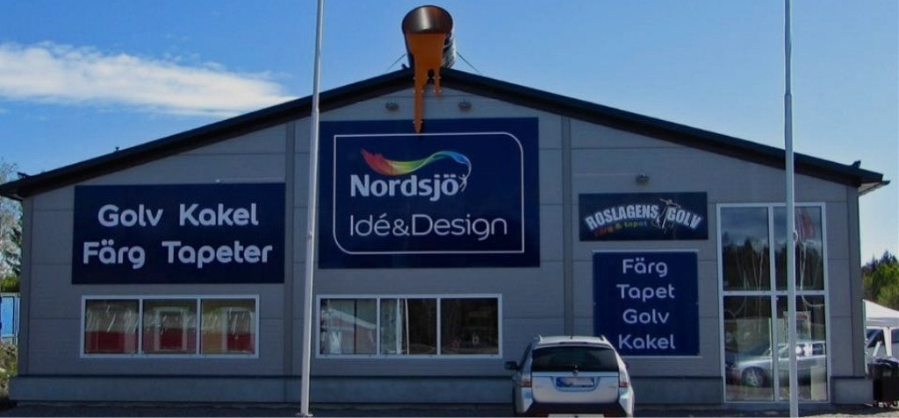

Golv · Färg · Hantverk · Östhammar
Rum att trivas i.
Golv att leva på.
Från första provbiten till sista listen. Vi hjälper dig hitta rätt bland golv, färg och material – och tar hand om arbetet.
Roslagens Golv
Känn på materialet.
Se möjligheterna.
Ett golv ska passa både rummet och livet som pågår där. Därför börjar vi gärna i det enkla: hur vill du att det ska kännas, och hur ska det användas?
I vår butik kan du jämföra golv, kulörer och ytor på riktigt. Sedan hjälper vår egen golventreprenad dig vidare, från underarbete till färdigt rum.
Upptäck vår butikMaterial & inspiration
Hitta din känsla.
Träets ådring, en mjuk matta eller ett nytt badrum. Börja med det du är nyfiken på.
Trä. Med liv i varje bräda.
Ådring, format och läggningsmönster ger rummet karaktär. Vi hjälper dig att jämföra parkett och olika uttryck – eller se om ditt befintliga golv kan slipas.
Mjukt. Lugnt. Hemma.
Ett textilgolv förändrar både känslan under fötterna och rummets uttryck. I butiken hjälper vi dig att jämföra struktur, färg och material för rätt miljö.
Ett golv för din vardag.
Utforska olika träuttryck och format i vinyl och laminat. Vi går igenom hur rummet används och hjälper dig att hitta alternativ som passar.
Ett rum att landa i.
Kakel, klinker och våtrumsmattor. Se materialen tillsammans och låt oss hjälpa dig med både valen och vad som behöver göras i ditt badrum.
Golvinspiration · fiskbensparkett Materialinspiration · textilgolv
Materialinspiration · textilgolv Inspiration för golvets uttryck · jämför material i butik
Inspiration för golvets uttryck · jämför material i butik Badrumsinspiration
BadrumsinspirationHantverket bakom
Nytt golv.
Eller nytt liv i det gamla.
Vår egen golventreprenad arbetar i hem, företag och offentliga miljöer i Östhammar och Uppsala län med omnejd.

Vår butik i ÖsthammarVälkommen till butiken
Vissa saker
ska man se
på riktigt.
Golv, kakel, klinker, mattor, färg, tapeter och verktyg. Kom in med en idé, en skiss eller ett foto på rummet – vi hjälper dig att hitta vidare.
”Fantastiskt service”
Från idé till rum
Vi gör det
tillsammans.
Berätta om rummet
Hur används det idag och vad vill du förändra? Ta med mått, bilder och tankar.
Jämför materialen
Se färg, struktur och golv tillsammans i butiken. Vi hjälper dig att välja.
Låt oss göra arbetet
Vi går igenom förutsättningarna, lämnar förslag och planerar genomförandet.
Ett urval av våra leverantörer
Ditt nästa steg
Ditt nästa rum
börjar här.
Vi hjälper dig att ta nästa steg. Ring oss eller beskriv ditt projekt i ett mejl.